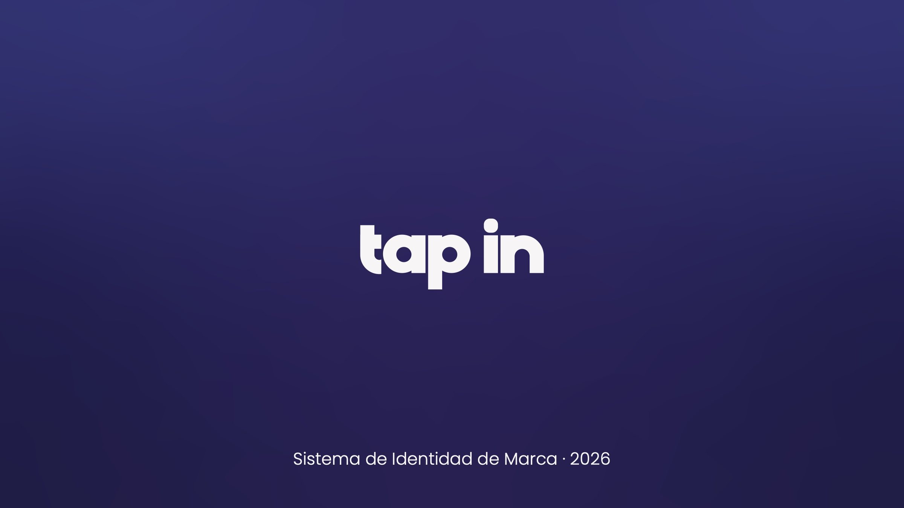
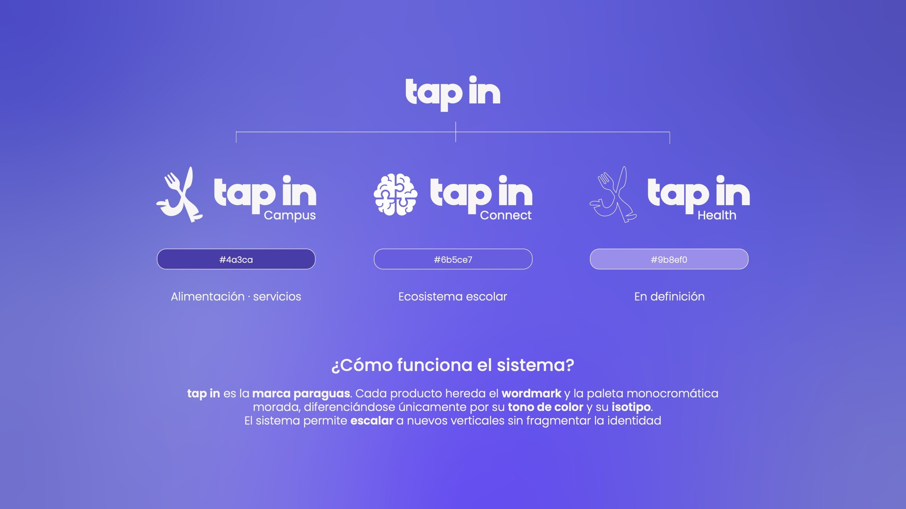
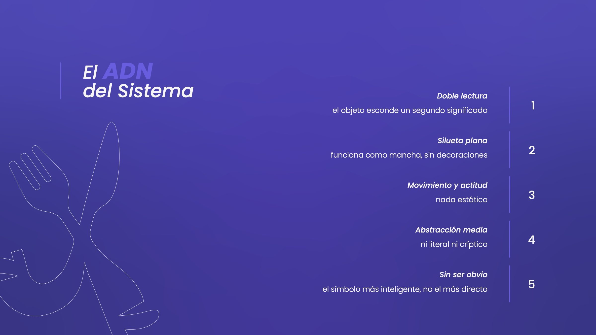
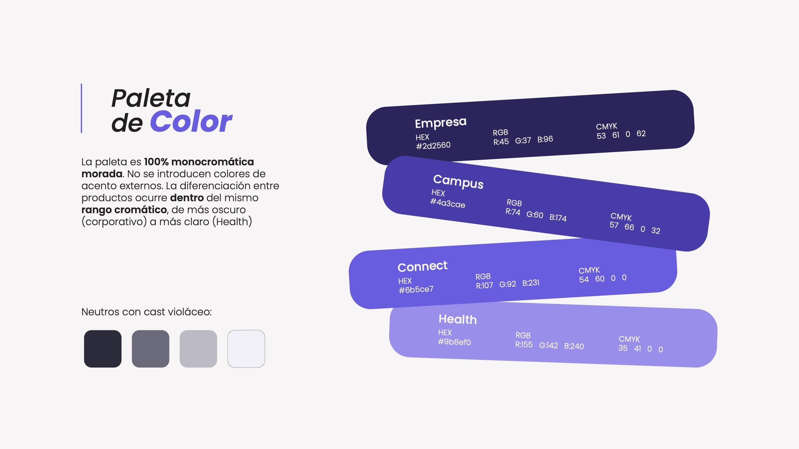
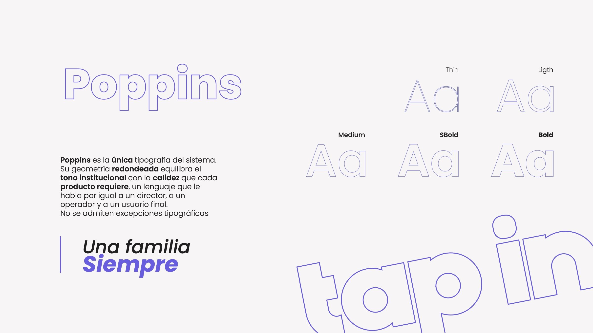
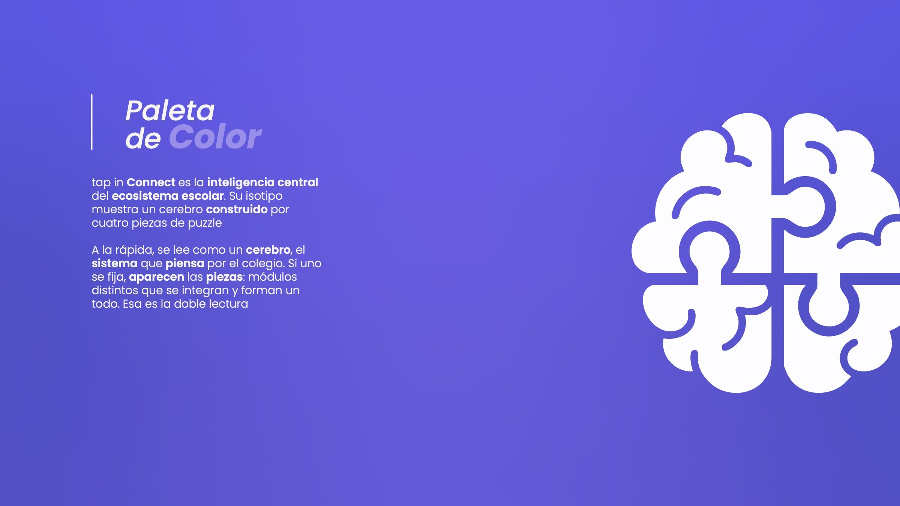
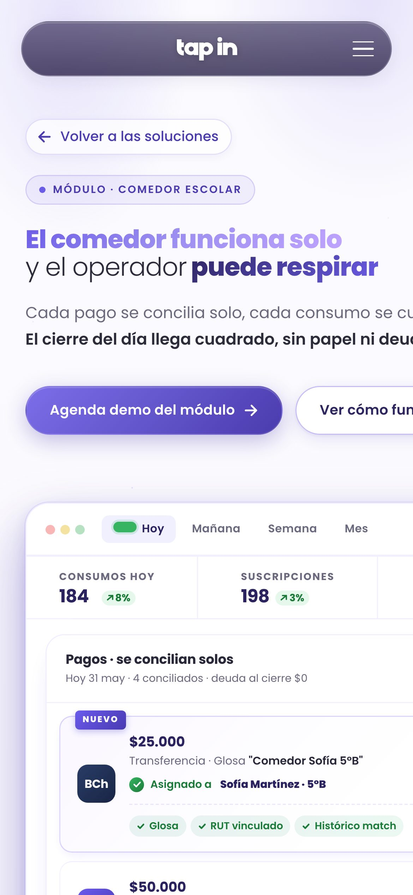
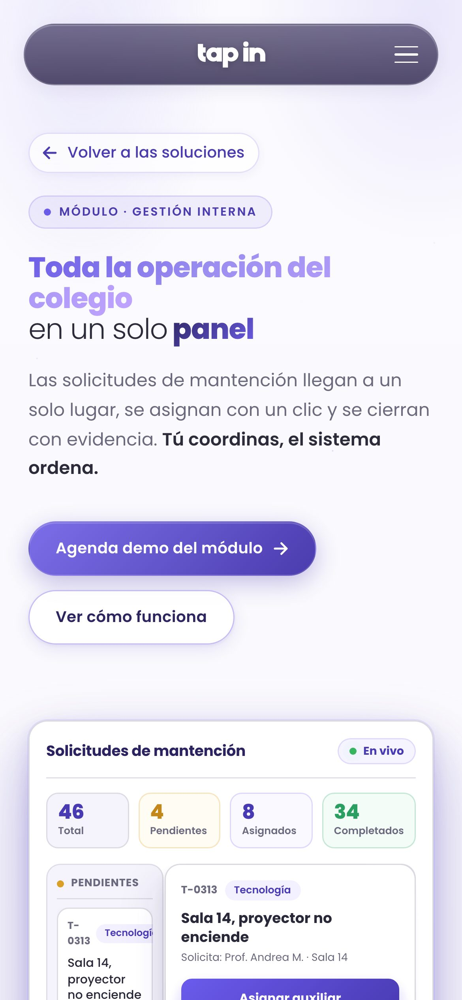

De la cafetería del campus a la plataforma del colegio
tapin.cl ↗Diseñé la marca de Tap In desde el día uno. Cuando la empresa se reinventó, rehice la marca y programé su web
Una marca que sobreviviera al pivote, de la comida a los colegios
tapin.cl en producción y una sola marca para todo el ecosistema
Pedir comida sin filas en la universidad, con unos cubiertos que corren
El origen
Una app para pedir comida sin filas en la universidad


 Red Bull
Red Bull Banco de Chile
Banco de Chile
El Rebirth
De app de comida a sistema para colegios. Antes de diseñar, un cuestionario a los socios
- CampusPedir comida sin filas en la universidad
- ConnectEl sistema del colegio, producto principal
- HealthServicios internos de salud, en camino
- +1El próximo producto, cuando llegue






La web
Diseñada y programada por mí, para que un director entienda en segundos


Qué hace, si funciona en mi colegio, quiénes son y cómo los contacto. "Soluciones" y no "Productos": nadie quiere comprar un catálogo.
El producto funcionando en el hero y, justo debajo, los colegios que ya lo usan. El director ve a sus pares antes de dudar.
Sin números: pestañas para elegir qué resolver primero, porque cada módulo se contrata por separado.
Cuando llegó el producto real, la web se reestructuró y pasó a fondo claro: institucional antes que tecnológico.
Las dudas del directivo con la respuesta abierta al lado: nada que tenga que adivinar ni desplegar.




tapin.cl en el teléfonoLa misma web, diseñada y programada a la par
Lo que quedó andando
- 9páginas en producción, diseñadas y programadas
- ≈40.000líneas de código propio, sin frameworks
- 8mockups animados con datos verosímiles
- 3productos en una sola familia de marca
Según la empresa, Campus llegó a más de 27.000 estudiantes en dos campus de la UC, y Connect a más de 15.000 familias en Chile y Perú. Cifras de la empresa, por confirmar
En una sola imagen se entiende cómo funciona. Eso es lo que teníamos que lograr.
Cofundador de Tap In
Citas suavizadas: publicar solo con aprobaciónEstá súper profesional, parece una empresa real. Es lo más clave para generar confianza.
Cofundador de Tap In
Diseñar con información que cambia. A mitad del camino llegó la realidad del producto: cambiaron la estructura y el contenido, el lenguaje visual se sostuvo.
- Marca, UX/UI y front end
- Agustín Avendaño
- Producto y deploy
- Equipo de desarrollo de Tap In
- Con
- Los cofundadores de Tap In